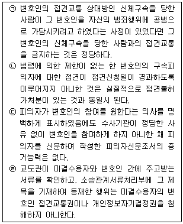
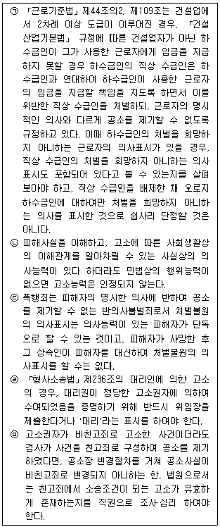
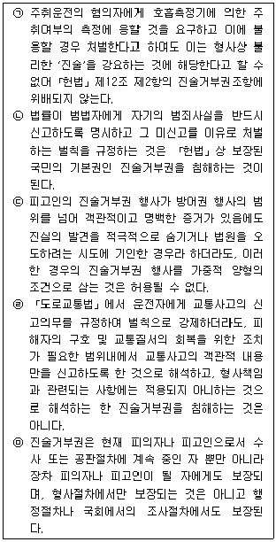
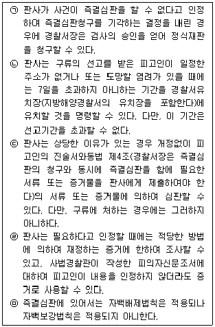

경찰공무원(순경)-형사소송법 (2017-09-02 기출문제)
1. 「형사소송법」의 이념인 적정절차의 원칙에 대한 설명으로 가장 적절하지 않은 것은? (다툼이 있는 경우 판례에 의함)
- 경찰관에게 등을 보인 채 상의를 속옷과 함께 겨드랑이까지 올리고 하의를 속옷과 함께 무릎까지 내린 상태에서 3회에 걸쳐 앉았다 일어서게 하는 방법으로 실시한 신체수색은「헌법」제10조 및 제12조에 의하여 보장되는 청구인들의 인격권 및 신체의 자유를 침해한 것이다.
- 음주운전과 관련한 「도로교통법」 위반죄의 범죄수사를 위하여 미성년자인 피의자의 혈액채취가 필요한 경우, 피의자에게 의사능력이 있다면 피의자 본인만이 혈액채취에 관한 유효한 동의를 할 수 있고, 피의자에게 의사능력이 없는 경우에도 명문의 규정이 없는 이상 법정대리인이 피의자를 대리하여 동의할 수는 없다.
- 선거관리위원회 위원·직원이 선거범죄와 관련하여 조사시 관계인에게 진술이 녹음된다는 사실을 미리 알려 주지 아니한 채 진술을 녹음한 경우, 그와 같은 조사절차에 의하여 수집한 녹음파일 내지 그에 터 잡아 작성된 녹취록은 증거능력이 없다.
- 범죄의 피의자로 입건된 사람들로 하여금 수사기관의 신문을 받으면서 자신의 신원을 밝히지 아니하고 지문채취에 불응하는 경우 벌금, 과료, 구류의 형사처벌을 받도록 하고 있는 구(舊)「경범죄처벌법」제1조 제42호 조항은 적법절차의 원칙에 위반된다.
(정답률: 75%)

2. 임의수사에 대한 설명으로 가장 적절하지 않은 것은?(다툼이 있는 경우 판례에 의함)
- 「경찰관직무집행법」제4조 제1항 제1호의 보호조치 요건이 갖추어지지 않았음에도, 경찰관이 실제로는 범죄수사를 목적으로 피의자에 해당하는 사람을 위 조항의 피구호자로 삼아 그의 의사에 반하여 경찰관서에 데려간 행위는, 달리 현행범체포나 임의동행 등의 적법 요건을 갖추었다고 볼 사정이 없다면, 위법한 체포에 해당한다고 보아야 한다.
- 수사관이 동행에 앞서 피의자에게 동행을 거부할 수 있음을 알려 주었거나 동행한 피의자가 언제든지 자유로이 동행과정에서 이탈 또는 동행장소로부터 퇴거할 수 있었음이 인정되는 등 오로지 피의자의 자발적인 의사에 의하여 수사관서 등에의 동행이 이루어졌음이 객관적인 사정에 의하여 명백하게 입증된 경우에 한하여, 임의동행의 적법성이 인정된다.
- 불심검문 대상자 해당 여부를 판단할 때에는 불심검문 당시의 구체적 상황은 물론 사전에 얻은 정보나 전문적 지식 등에 기초하여 불심검문 대상자인지를 객관적·합리적인 기준에 따라 판단하여야 하며, 불심검문 대상자에게 형사소송법상 체포나 구속에 이를 정도의 혐의가 있을 것을 요한다.
- 수사에 관하여는 공무소 기타 공사단체에 조회하여 필요한 사항의 보고를 요구할 수 있다.
(정답률: 80%)
3. 접견교통권에 대한 설명 중 옳고 그름의 표시(O, X)가 바르게 된 것은?(다툼이 있는 경우 판례에 의함)

- ㉠(X), ㉡(O), ㉢(O), ㉣(X),
- ㉠(X), ㉡(O), ㉢(O), ㉣(O)
- ㉠(O), ㉡(X), ㉢(O), ㉣(X)
- ㉠(X), ㉡(O), ㉢(X), ㉣(O)
(정답률: 86%)
4. 고소 등에 대한 설명 중 옳은 것만을 모두 고른 것은?(다툼이 있는 경우 판례에 의함)

- ㉠㉡
- ㉠㉢㉤
- ㉢㉤
- ㉢㉣㉤
(정답률: 71%)
5. 「형사소송법」상 긴급체포에 대한 설명으로 가장 적절하지 않은 것은? (다툼이 있는 경우 판례에 의함)
- 사법경찰관이「형사소송법」제200조의3(긴급체포)에 의하여 피의자를 긴급체포한 때에는 즉시 검사의 승인을 얻어야 한다.
- 긴급체포서에는 범죄사실의 요지, 긴급체포의 사유 등을 기재하여야 한다.
- 긴급체포의 요건을 갖추었는지 여부는 체포 당시의 상황을 기초로 판단하는 것이 아니라 사후에 밝혀진 사정을 기초로 법원이 객관적으로 엄격하게 판단하여야 한다.
- 긴급체포된 피의자에 대하여 구속영장이 발부된 경우에 그 구속기간은 피의자를 체포한 날부터 기산한다.
(정답률: 78%)
6. 체포·구속적부심사에 대한 설명으로 가장 적절하지 않은 것은?
- 체포·구속적부심사결정에 의하여 석방된 피의자가 도망하거나 죄증을 인멸하는 경우를 제외하고는 동일한 범죄사실에 관하여 재차 체포 또는 구속하지 못한다.
- 체포·구속적부심사청구에 대한 기각결정에 대하여는 3일 이내 항고할 수 있다.
- 긴급체포 등 체포영장에 의하지 아니하고 체포된 피의자의 경우에도 체포·구속적부심사를 청구할 권리를 가진다.
- 구속된 피의자로부터 구속적부심사의 청구를 받은 법원이 피의자의 출석을 보증할 만한 보증금의 납입을 조건으로 하여 석방결정을 하는 경우에 주거의 제한, 법원 또는 검사가 지정하는 일시·장소에 출석할 의무 기타 적당한 조건을 부가할 수 있다.
(정답률: 84%)
7. 전자정보의 압수·수색에 대한 설명으로 가장 적절하지 않은 것은?(다툼이 있는 경우 판례에 의함)
- 압수물인 디지털 저장매체로부터 출력한 문건을 증거로 사용하기 위해서는 디지털 저장매체 원본에 저장된 내용과 출력한 문건의 동일성이 인정되어야 하고, 이를 위해서는 디지털 저장매체 원본이 압수시부터 문건 출력시까지 변경되지 않았음이 담보되어야 한다.
- 전자정보에 대한 압수·수색영장을 집행할 때에는 원칙적으로 저장매체 자체를 수사기관 사무실 등으로 옮겨 혐의사실과 관련된 부분만을 문서로 출력하거나 해당 파일을 복사하는 방식으로 이루어져야 한다.
- 전자정보가 담긴 저장매체 또는 복제본을 수사기관 사무실 등으로 옮겨 이를 복제·탐색·출력하는 경우, 피압수자 측에 절차 참여를 보장한 취지가 실질적으로 침해되었다면 수사기관이 저장매체 또는 복제본에서 혐의사실과 관련된 전자정보만을 복제·출력하였더라도 그 압수·수색은 위법하다.
- 전자정보에 대한 압수·수색이 종료되기 전에 혐의사실과 관련된 전자정보를 적법하게 탐색하는 과정에서 별도의 범죄혐의와 관련된 전자정보를 우연히 발견한 경우, 수사기관은 더 이상의 추가 탐색을 중단하고 법원에서 별도의 범죄혐의에 대한 압수·수색영장을 발부받은 경우에 한하여 그러한 정보에 대하여도 적법하게 압수·수색을 할 수 있다.
(정답률: 69%)
8. 증거보전절차에 대한 설명으로 가장 적절하지 않은 것은?(다툼이 있는 경우 판례에 의함)
- 공동피고인과 피고인이 뇌물을 주고 받은 사이로 필요적 공범관계에 있다고 하더라도 검사는 수사단계에서 피고인에 대한 증거를 미리 보전하기 위하여 필요한 경우에는 판사에게 공동피고인을 증인으로 신문할 것을 청구할 수 있다.
- 증거보전의 청구를 함에는 서면 또는 구술로 그 사유를 소명할 수 있다.
- 증거보전은 제1심 제1회 공판기일 전에 한하여 허용되는 것이므로 재심청구사건에서는 증거보전절차는 허용되지 아니한다.
- 제1회 공판기일 전에「형사소송법」제184조에 의한 증거보전절차에서 증인신문을 하면서, 위 증인신문의 일시와 장소를 피의자 및 변호인에게 미리 통지하지 아니하여 증인신문에 참여할 수 있는 기회를 주지 아니하였고, 또 변호인이 제1심 공판기일에 위 증인신문조서의 증거조사에 관하여 이의신청을 하였다면, 위 증인신문조서는 증거능력이 없다 할 것이고, 그 증인이 후에 법정에서 그 조서의 진정성립을 인정한다 하여 다시 그 증거능력을 취득한다고 볼 수도 없다.
(정답률: 44%)
9. 법관의 제척·기피에 대한 설명으로 가장 적절하지 않은 것은?(다툼이 있는 경우 판례에 의함)
- 환송판결전의 원심에 관여한 재판관이 환송 후의 원심재판관으로 관여하였더라도 제척의 원인이 되지 않는다.
- 기피신청이 소송의 지연을 목적으로 함이 명백한 때에는 신청을 받은 법원 또는 법관은 결정으로 이를 기각한다. 위 기각결정에 대한 즉시항고는 재판의 집행을 정지하는 효력이 없다.
- 기피사유는 신청한 날로부터 3일 이내에 서면으로 소명하여야 하고, 기피신청을 함에 있어서는 기피의 원인되는 사실을 구체적으로 명시하여야 한다.
- 공소제기 전에 검사의 청구에 의하여 증거보전절차상의 증인신문을 한 법관은 전심재판 또는 그 기초되는 조사·심리에 관여한 법관으로 보아야 하며, 이는 제척사유에 해당한다.
(정답률: 35%)
10. 공소장 변경에 대한 설명으로 가장 적절하지 않은 것은?(다툼이 있는 경우 판례에 의함)
- 검사가 공소사실 중 임차권 양도계약 중개수수료 교부자를 甲에서 乙로 변경하는 공소장변경 신청을 하고 원심이 이를 허가한 사안에서, 그와 같이 공소장을 변경하더라도 피고인이 공소사실 기재 일시 장소에서 위 계약을 중개한 후 법정 수수료 상한을 초과한 중개수수료를 교부받았다는 사실에는 변함이 없으므로, 공소사실의 동일성이 인정되어 공소장변경이 허용된다.
- 피고인이 이적표현물을 제작·반포한 사실은 부인하면서 이를 취득·소지한 것에 대하여는 자백하는 취지로 진술한다고 하여도 법원이 검사에게 공소장의 변경을 요구할 것인지 여부는 법원의 재량에 속하는 것이므로, 법원이 검사에게 그 표현물을 취득·소지한 것으로 공소장변경을 요구하지 아니하였다 하여 위법하다고 할 수 없다.
- 검사는 법원의 허가를 얻어 공소장에 기재한 공소사실 또는 적용법조의 추가, 철회 또는 변경을 할 수 있다. 이 경우에 법원은 공소사실의 동일성을 해하지 아니하는 한도에서 허가하여야 한다.
- 법원은 공소사실 또는 적용법조의 추가, 철회 또는 변경이 피고인의 불이익을 증가할 염려가 있다고 인정한 때에는 직권 또는 피고인이나 변호인의 청구에 의하여 피고인으로 하여금 필요한 방어의 준비를 하게 하기 위하여 결정으로 필요한 기간 공판절차를 정지하여야 한다.
(정답률: 38%)
11. 진술거부권에 대한 설명 중 옳고 그름의 표시(O, X)가 바르게 된 것은?(다툼이 있는 경우 판례에 의함)

- ㉠(O), ㉡(O), ㉢(X), ㉣(O), ㉤(O)
- ㉠(X), ㉡(O), ㉢(O), ㉣(X), ㉤(O)
- ㉠(O), ㉡(O), ㉢(X), ㉣(O), ㉤(X)
- ㉠(O), ㉡(X), ㉢(X), ㉣(O), ㉤(O)
(정답률: 65%)
12. 증거개시제도에 대한 설명으로 가장 적절하지 않은 것은?
- 피고인 또는 변호인은 검사에게 공소제기된 사건에 관한 서류 또는 물건(이하 '서류등'이라 한다)의 목록을 열람·등사 또는 서면의 교부를 신청할 수 있으며, 변호인을 선임한 피고인도 검사에 대해 증거서류 등의 열람·등사 및 서면의 교부를 신청할 수 있다.
- 피고인 또는 변호인은 검사가 서류등의 열람·등사 또는 서면의 교부를 거부하거나 그 범위를 제한한 때에는 법원에 그 서류등의 열람·등사 또는 서면의 교부를 허용하도록 할 것을 신청할 수 있다.
- 검사는 국가안보, 증인보호의 필요성, 증거인멸의 염려, 관련 사건의 수사에 장애를 가져올 것으로 예상되는 구체적인 사유 등 열람·등사 또는 서면의 교부를 허용하지 아니할 상당한 이유가 있다고 인정하는 때에는 열람·등사 또는 서면의 교부를 거부하거나 그 범위를 제한할 수 있다. 이 경우에도 서류등의 목록에 대하여는 열람 또는 등사를 거부할 수 없다.
- 검사는 열람·등사 또는 서면의 교부를 거부하거나 그 범위를 제한하는 때에는 지체 없이 그 이유를 서면으로 통지하여야 한다.
(정답률: 49%)
13. 국민참여재판에 대한 설명으로 가장 적절하지 않은 것은?(다툼이 있는 경우 판례에 의함)
- 법원은 대상사건의 피고인에 대하여 국민참여재판을 원하는지 여부에 관한 의사를 서면 등의 방법으로 반드시 확인하여야 한다.
- 제1심법원이 국민참여재판 대상이 되는 사건임을 간과하여 이에 관한 피고인의 의사를 확인하지 아니한 채 통상의 공판절차로 재판을 진행하였다면, 비록 피고인이 항소심에서 국민참여재판을 원하지 아니한다고 하면서 제1심의 절차적 위법을 문제삼지 아니할 의사를 명백히 표시하였더라도 그 하자는 치유되지 않으며 제1심 공판절차는 전체로서 위법하다.
- 법원은 공소사실의 일부 철회 또는 변경으로 인하여 대상사건에 해당하지 아니하게 된 경우에도 국민참여재판을 계속 진행한다. 다만, 법원은 심리의 상황이나 그 밖의 사정을 고려하여 국민참여재판으로 진행하는 것이 적당하지 아니하다고 인정하는 때에는 결정으로 당해 사건을 지방법원 본원 합의부가 국민 참여재판에 의하지 아니하고 심판하게 할 수 있다.
- 공소장 부본을 송달받은 날부터 7일 이내에 의사확인서를 제출하지 아니한 피고인도 제1회 공판기일이 열리기 전까지는 국민참여재판 신청을 할 수 있고, 법원은 그 의사를 확인하여 국민참여재판으로 진행할 수 있다.
(정답률: 44%)
14. 증거동의에 대한 설명으로 가장 적절하지 않은 것은?(다툼이 있는 경우 판례에 의함)
- 필요적 변호사건이라 하여도 피고인이 재판거부의 의사를 표시하고 재판장의 허가 없이 퇴정하고 변호인마저 이에 동조하여 퇴정해 버렸다면, 법원은 피고인이나 변호인의 재정 없이도 심리 판결 할 수 있고 이 경우 피고인의 진의와는 관계없이 증거동의가 있는 것으로 간주된다.
- 개개의 증거에 대하여 개별적인 증거조사방식을 거치지 아니하고 검사가 제시한 모든 증거에 대하여 피고인이 증거로 함에 동의한다는 방식의 증거동의도 효력이 있다.
- 약식명령에 불복하여 정식재판을 청구한 피고인이 정식재판 절차의 제1심에서 2회 불출정하여「형사소송법」제318조 제2항에 따른 증거동의가 간주된 후 증거조사를 완료하였더라도 피고인이 항소심에 출석하여 간주된 증거동의를 철회 또는 취소한다는 의사표시를 하면 제1심에서 부여된 증거의 증거능력은 상실된다.
- 피고인이 신청한 증인의 증언이 피고인 아닌 타인의 진술을 그 내용으로 하는 전문진술이라고 하더라도 피고인이 그 증언에 대하여 별 의견이 없다고 진술하였다면 그 증언을 증거로 함에 동의한 것으로 볼 수 있으므로 이는 증거능력이 있다.
(정답률: 64%)
15. 「형사소송법」제315조에 의해서 당연히 증거능력이 인정되는 것으로 가장 적절하지 않은 것은?(다툼이 있는 경우 판례에 의함)
- 미국 연방수사국(FBI)의 수사관이 작성한 수사보고서
- 성매매업소에서 영업에 참고하기 위하여 성매매상대방에 관한 정보를 입력하여 작성한 메모리카드의 내용
- 구속적부심사절차에서 피의자를 심문하고 그 진술을 기재한 구속적부심문조서
- 다른 피고인에 대한 형사사건의 공판조서
(정답률: 65%)
16. 피의자신문조서에 대한 설명으로 가장 적절하지 않은 것은?(다툼이 있는 경우 판례에 의함)
- 검사 이외의 수사기관이 작성한 피의자신문조서는 적법한 절차와 방식에 따라 작성된 것으로서 공판준비 또는 공판기일에 그 피의자였던 피고인 또는 변호인이 그 내용을 인정할 때에 한하여 증거로 할 수 있다.
- 당해 피고인과 공범관계가 있는 다른 피의자에 대한 검사 이외의 수사기관 작성의 피의자신문조서는 사망 등 사유로 인하여 법정에서 진술할 수 없는 때에 예외적으로 증거능력을 인정하는 규정인「형사소송법」제314조가 적용되지 아니한다.
- 검찰주사가 검사의 지시에 따라 검사가 참석하지 않은 상태에서 피의자였던 피고인을 신문하여 작성하고 검사는 검찰주사의 조사 직후 피고인에게 개괄적으로 질문한 사실이 있을 뿐인데도 검사가 작성한 것으로 되어 있는 피고인에 대한 피의자신문조서는 검사 작성의 피의자신문조서로서 인정될 수 없다.
- 피고인이 그 진술을 기재한 검사 작성의 피의자신문조서 중 일부에 관하여만 실질적 진정성립을 인정하는 경우에는 법원은 당해 조서 중 어느 부분이 그 진술대로 기재되어 있고 어느 부분이 달리 기재되어 있는지 여부를 구체적으로 심리함이 없이 전체 피의자신문조서의 증거능력을 부정하여야 한다.
(정답률: 80%)
17. 자백의 보강법칙에 대한 설명으로 가장 적절하지 않은 것은?(다툼이 있는 경우 판례에 의함)
- 뇌물수수자가 무자격자인 뇌물공여자로 하여금 건축공사를 하도급 받도록 알선하고 그 하도급계약을 승인받을 수 있도록 하였으며, 공사와 관련된 각종의 편의를 제공한 사실을 인정할 수 있는 증거들은 뇌물공여자의 자백에 대한 보강증거가 될 수 있다.
- 2010. 2. 18. 01:35경 자동차를 타고 온 피고인으로부터 필로폰을 건네받은 후 피고인이 위 차량을 운전해 갔다고 한 甲의 진술과 2010. 2. 20. 피고인으로부터 채취한 소변에서 나온 필로폰 양성 반응은, 피고인이 2010. 2. 18. 02:00경의 필로폰 투약으로 정상적으로 운전하지 못할 우려가 있는 상태에 있었다는 도로교통법위반 공소사실 부분에 대한 자백을 보강하는 증거가 되기에 충분하다.
- 피고인이 자신이 거주하던 다세대주택의 여러 세대에서 7건의 절도행위를 한 것으로 기소되었는데 그 중 4건은 범행장소인 구체적 호수가 특정되지 않은 사안에서, 위 4건에 관한 피고인의 범행 관련 진술이 매우 사실적·구체적·합리적이고 진술의 신빙성을 의심할 만한 사유도 없어 자백의 진실성이 인정되므로, 피고인의 집에서 해당 피해품을 압수한 압수조서와 압수물 사진은 위 자백에 대한 보강증거가 된다.
- 피고인이 甲과 합동하여 乙의 재물을 절취하려다가 미수에 그쳤다는 내용의 공소사실을 자백한 사안에서, 피고인을 현행범으로 체포한 乙의 수사기관에서의 진술과 현장사진이 첨부된 수사보고서가 피고인 자백에 대한 보강증거가 될 수 없다.
(정답률: 59%)
18. 재심사유로서 '유죄의 선고를 받은 자에 대하여 무죄 또는 면소 등을 인정할 명백한 증거가 새로 발견된 때(「형사소송법」제420조 제5호)'에 대한 설명으로 가장 적절하지 않은 것은?(다툼이 있는 경우 판례에 의함)
- '증거가 새로 발견된 때'란 재심대상이 되는 확정판결의 소송 절차에서 발견되지 못하였거나 또는 발견되었다 하더라도 제출할 수 없었던 증거를 새로 발견하였거나 비로소 제출할 수 있게 된 때를 말한다.
- 피고인이 재심을 청구한 경우, 재심대상이 되는 확정판결의 소송절차 중에 그러한 증거를 제출하지 못한 데 과실이 있다면 그 증거는 '증거가 새로 발견된 때'에서 제외된다.
- '무죄 등을 인정할 명백한 증거'에 해당하는지 여부를 판단할 때에는 법원으로서는 새로 발견된 증거만을 독립적·고립적으로 고찰하여 그 증거가치만으로 재심의 개시 여부를 판단하여야 한다.
- 당해 사건의 증거가 아니고 공범자 중 1인에 대하여는 무죄, 다른 1인에 대하여는 유죄의 확정판결이 있는 경우에 무죄확정 판결의 증거자료를 자기의 증거자료로 하지 못하였고 또 새로 발견된 것이 아닌 한 무죄확정판결 자체만으로는 유죄확정판결에 대한 새로운 증거로서의 재심사유에 해당한다고 할 수 없다.
(정답률: 30%)
19. 「즉결심판절차법」에 대한 설명 중 옳고 그름의 표시(O, X)가 바르게 된 것은?

- ㉠(X), ㉡(X), ㉢(X), ㉣(O), ㉤(O)
- ㉠(O), ㉡(X), ㉢(O), ㉣(O), ㉤(X)
- ㉠(X), ㉡(X), ㉢(O), ㉣(O), ㉤(O)
- ㉠(O), ㉡(O), ㉢(O), ㉣(X), ㉤(O)
(정답률: 24%)
20. 「소년법」상 소년범에 대한 형사절차 내용으로 가장 적절한 것은?(다툼이 있는 경우 판례에 의함)
- 18세 미만의 소년피고인에 대해서도 원칙적으로 벌금형의 환형유치는 허용된다.
- 소년피고인에 대하여는 형의 집행유예가 허용되지 않는다.
- 항소심판결 당시 피고인이 미성년이었으나 상고심 계속 중에 성년이 된 경우 항소심의 부정기형 선고는 위법이 된다.
- 형벌법령에 저촉되는 행위를 한 10세 이상 14세 미만의 소년이 있는 때 경찰서장은 직접 관할 소년부에 송치하여야 한다.
(정답률: 35%)